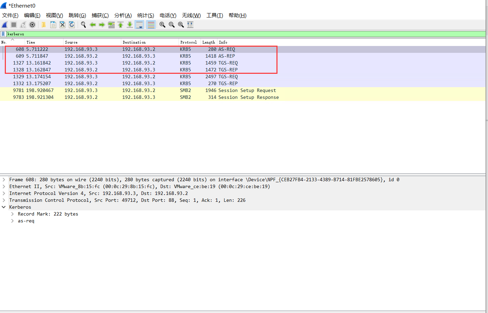

参考：https://github.com/daikerSec/windows_protocol
https://blog.csdn.net/qq_36119192/category_10225019.html
https://shenaniganslabs.io/2019/01/28/Wagging-the-Dog.html
目录
TGS_REQ
用户通过AS_REP拿到的TGT票据，以及使用自己NTLM Hash解密出来的Session Key加密的客户端信息跟时间戳。去向KDC申请特定服务的访问权限，KDC校验TGT票据

流量包：
- msg-type
类型，TGS_REQ对应的就是KRB_TGS_REQ(0x0c)
- PA-DATA
正常的TGS_REQ的请求需要用到有
AP-REQ
这个是TGS_REQ必须携带的部分，这部分会携带AS_REP里面获取到的TGT票据和Session Key加密的客户端信息跟时间戳，就放在这个结构体里面。
PA_FOR_USER
值是一个唯一的标识符，该标识符指示用户的身份。该唯一标识符由用户名和域名组成。
S4U2proxy 必须扩展PA_FOR_USER结构，指定服务代表某个用户(图片里面是administrator)去请求针对服务自身的kerberos服务票据。
*
PA_PAC_OPTIONS
类型是 PA_PAC_OPTIONS
值是以下flag的组合
– Claims(0)
– Branch Aware(1)
– Forward to Full DC(2)
– Resource-based Constrained Delegation (3)
微软的MS-SFU 2.2.5， S4U2proxy 必须扩展PA-PAC-OPTIONS结构。
如果是基于资源的约束委派，就需要指定Resource-based Constrained Delegation位。
- REQ_BODY
sname
这个是要请求的服务，TGS_REP获得的ticket是用该服务用户的hash进行加密的。有个比较有意思的特性是，如果指定的服务是krbtgt，那么拿到的TGS票据是可以当做TGT票据用的。
AddtionTicket
附加票据，在S4U2proxy请求里面，既需要正常的TGT，也需要S4U2self阶段获取到的TGS，那么这个TGS就添加到AddtionTicket里面。
TGS_REP
msg-type
AS_REQ的响应body对应的就是KRB_TGS_REQ(0x0d)
ticket
这个ticket用于AP_REQ的认证。其中里面的enc_part是加密的，用户不可读取里面的内容。在AS_REQ请求里面是，是使用krbtgt的hash进行加密的，而在TGS_REQ里面是使用要请求的服务的hash加密的。因此如果我们拥有服务的hash就可以自己制作一个ticket，既白银票据。正因为是使用要请求的服务的hash加密的，所以我们可以通过爆破enc_part获得该服务的hash，既kerberoasting
enc_part
这个enc_part不是ticket里面的enc_part，这部分是可以解密的，key是上一轮AS_REP里面返回的session_key,也就是导入凭据里面的 session_key，解密后得到encryptionkey，encryptionkey这个结构里面最重要的字段也是session_key(但是这个session_key 不同于上一轮里面的session_key)，用来作为作为下阶段的认证密钥。
非约束性委派
对于非约束性委派(Unconstrained Delegation)，服务账号可以获取被委派用户的TGT，并将TGT缓存到LSASS进程中，从而服务账号可使用该TGT，模拟用户访问任意服务。
配置了非约束性委派属性的机器账号的userAccountControl 属性有个FLAG位 WORKSTATION_TRUST_ACCOUNT |
TRUSTED_FOR_DELEGATION，其对应的数是0x81000=528384。
配置了非约束性委派属性的服务账号的userAccountControl 属性有个FLAG位 NORMAL_ACCOUNT | TRUSTED_FOR_DELEGATION，
其对应的数是0x80200=524800。
非约束委派的设置需要SeEnableDelegation特权，该特权通常仅授予域管理员。
非约束委派的配置如下
将域用户注册为服务账户
配置非约束委派
约束性委派
由于非约束性委派的不安全性，微软在Windows Server 2003中发布了约束性委派。同时，为了在Kerberos协议层面对约束性委派的支持，
微软扩展了两个子协议 S4u2self(Service for User to Self) 和 S4u2Proxy (Service for User to Proxy )。对于约束性委派（Constrained
Delegation），服务账号只能获取该用户的TGS服务票据，从而只能模拟该用户访问特定的服务。配置了约束性委派账户的msDS-
AllowedToDelegateTo属性会指定对哪个SPN进行委派。约束委派的设置需要 SeEnableDelegation 特权，该特权通常仅授予域管理员。
配置了非约束性委派的机器账号的userAccountControl属性有个FLAG位 WORKSTATION_TRUST_ACCOUNT |
TRUETED_TO_AUTHENTICATE_FOR_DELEGATION，其对应的数是0x1001000=16781312。
配置了非约束性委派的服务账号的userAccountControl属性有个FLAG位 NORMAL_ACCOUNT |
TRUETED_TO_AUTHENTICATE_FOR_DELEGATION，其对应的数是0x1000200=16777728。
S4U2SELF
当用户以其他方式(如NTLMi认证、基于表单的认证等方式)与Web服务进行认证后，用户是无法向Server1服务器提供请求该服务的TGS服务票据的，因而服务器也无法进一步使用S4U2Proxy协议请求访问域控的CIFS服务。S4U2Self协议便是解决该问题的方案，被配置为约束委派的服务能够调用S4U2Self向KDC为任意用户请求访问自身的可转发的服务票据，此后，便可通过S4U2Proxy使用这张TGS票据向域控制器请求访问域控的CIFS服务的票据。这里需要注意的是服务代表用户获得针对服务自身TGS票据这个过程是不需要用户的凭据的。
S42Self的过程如图(请求服务之前需要申请可转发的TGT，即需要向域控认证账户密码)
S4U2PROXY
S4U2Proxy使得Server1可以使用来自用户的授权(在S4U2self阶段获得)，然后用该TGS票据(放在AdationTicket里面)向KD请求访问域控的CIFS服务的TGS，并且代表用户访问域控的CIFS服务，而且只能访问域控的CIFS服务。
约束性委派流程
为了进行约束性委派，微软在Kerberos 协议的TGS_REQ & TGS_REP阶段引入了两个扩展子协议S4u2Self (Service for User to Self)和S4u2Proxy(Service for User to Proxy )。
S4u2self可以代表任意用户请求针对其自身的Kerberos服务票据(TGS);
S4u2Proxy可以以上一步用户的名义请求其它服务的服务票据。约束性委派就是限制了S4u2Proxy扩展的范围。
来捋一下整个流程
在Server1上配置到域控的CIFS服务约束性委派
- 用户访问Server1，于是向域控进行kerberos认证，域控返回可转发的TGS服务票据给用户，用户使用此服务票据访问Server1(上图中的第1、2、3步)
- 若该Server1允许委派给域控的CIFS服务，并且使用Kerberos协议认证请求Server1，则Server1能使用S42Proxy协议将用户发送给自己的可转发的TGS服务票据以用户的身份再转发给域控制器，向域控申请访问CIFS服务的TGS服务票据，于是域控返回给Server1─个域控的CIFS服务的TGS服务票据（上图中的第6步）。若用户以其他方式(如NTLMi认证、基于表单的认证等方式)与Server1服务进行认证后，用户是无法向Server1服务器提供请求该服务的可转发TGS服务票据的，这时候S4U2Self协议便是解决该问题的方案，被配置为约束委派的服务能够调用S4U2Self向KDC为任意用户请求访问自身的可转发的服务票据（上图中的第4、5步），使用S42Proxy协议将S4U2Self协议申请的可转发的TGS服务票据以用户的身份再转发给域控制器，向域控申请访问CIFS服务的TGS服务票据(上图第6步)
- Server1便能使用获得的域控的CIFS服务的TGS服务票据以用户的身份访问域控的CIFS服务。（上图中的第7步）
从网络攻击的角度来看，如果攻击者控制了Server1的账号，并且Server1配置了到域控的CIFS服务的约束性委派。则攻击者可以利用Server1以administrator身份访问域控的CIFS服务，即相当于控制了域控。
流量分析
S4U2SELF流量
S4U2self请求流量，也就是上面约束委派流程图的第4、5步

- 先向KDC申请服务自身的可转发的TGT票据
2、返回可转发TGT票据
上图的票据cipher为aa7d6d6b79d0…..
我们可以使用daiker大佬的工具查看这张TGT票据
cipher是一样的说明是这张，可以解密看一下它的flags字段有一个forwardable的值代表可转发
3、携带着可转发TGT票据，代表administrator用户获得针对服务自身的可转发TGS票据

4、返回用户administrator请求服务自身的可转发TGS票据
票据的cipher值为dfdc318f3564931……
S4U2PROXY流量
1、携带着可转发TGT票据以及S4U2Self协议申请administrator用户针对服务自身的可转发的TGS服务票据以用户的身份再转发给域控制器，TGS票据放在AdationTicket里面，向域控申请访问CIFS服务的TGS服务票据。
可转发TGT票据在pA-TGE-REQ字段下的ap-req字段中
TGS票据放在req-body的AdationTicket字段中
向域控申请访问CIFS服务的TGS服务票据。
2、返回administator用户访问CIFS服务的TGS服务票据
3、将票据注入内存中，代表用户访问域控的CIFS服务
SMB协议中带着CIFS服务的TGS服务票据

基于资源的约束委派
为了使用户资源更加独立，微软在Windows Server 2012中引入了基于资源的约束性委派。基于资源的约束委派不需要域管理员权限去设 置，而是把设置属性的权限赋予给了机器自身。基于资源的约束性委派允许资源配置受信任的帐户委派给他们。基于资源的约束性委派只能 在运行Windows Server 2012和Windows Server 2012 R2及以上的域控制器上配置，但可以在混合模式林中应用。配置了基于资源的约 束性委派账户的msDS-AllowedToActOnBehalfOfOtherIdentity 属性的值为被允许委派账号的SID，并且委派属性这里没有任何值。基于资源的约束委派和约束性委派请求流程基本一致，唯一的区别在于S4U2SELF这一步请求的TGS是不可转发的无论服务账号的UserAccountControl属性是否被设置为TrustedToAuthForDelegation值，服务自身都可以通过调用S4U2Self来为任意用户请求自身的服务票据。但是当没有设置该属性时，KDC通过检查服务账号的TrustedToHuthForDelegation位和msDS-AllowedToDelegateTo这两个字段，发现没有被赋值，所以服务自身通过S4U2Self请求到的TGS服务票据是不可转发的，因此不可转发的TGS服务票据是无法通过S4U2Proxy转发到其他服务进行约束性委派认证的。但是在基于资源的约束委派过程中，不可转发的TGS服务票据仍然可以通过S4U2Proxy转发到其他服务进行委派认证，并且最后服务还会返回一张可转发的TGS服务票据!因此，如果我们能够在域控上配置允许server1的基于资源的约束委派，那么我们就可以通过控制server1使用S4U2Self向域控请求任意用户访问自身的服务票据,最后再使用S4U2Proxy转发此TGS票据去请求访问域控的可转发的TGS服务票据，那么我们就可以模拟任意用户访问域控了。这里我们可以以普通域用户的身份去创建机器账号作为server1。
前提：这里实验我们手动上域控配置基于资源的约束委派
1 | Get-ADComputer WIN-4QH1BAMD7NP -Properties PrincipalsAllowedToDelegateToAccount |
S4U2Self请求到的TGS服务票据是不可转发的
S4U2Proxy认证返回可转发的TGS服务票据
PAC
PAC结构
PAC的结构如下图所示。
PAC整体的结构上是一个AuthorizationData的结构
1 | AuthorizationData ::= SEQUENCE OF SEQUENCE { |
AuthorizationData结构的ad-type主要有以下几个
1 | AD-IF-RELEVANT 1 |
如上图所示，整个PAC最外层的ad-type为AD-IF-RELEVANT，ad-data还是一个AuthorizationData结构。
这个AuthorizationData的ad-type 为AD-WIN2K-PAC，ad-data为一段连续的空间，
这段空间包含一个头部PACTYPE以及若干个PAC_INFO_BUFFER
头部PACTYPE包括cBuffers,版本以及缓冲区，PAC_INFO_BUFFER为key-value型的
key 的类型如下表所示
| 类型 | 意义 |
|---|---|
| 0x00000001 | 登录信息。PAC结构必须包含一个这种类型的缓冲区。其他登录信息缓冲区必须被忽略。 |
| 0x00000002 | 凭证信息。PAC结构不应包含多个此类缓冲区。第二或后续凭证信息缓冲区在接收时必须被忽略。 |
| 0x00000006 | 服务器校验和。PAC结构必须包含一个这种类型的缓冲区。其他登录服务器校验和缓冲区必须被忽略。 |
| 0x00000007 | KDC（特权服务器）校验和（第2.8节）。PAC结构必须包含一个这种类型的缓冲区。附加的KDC校验和缓冲区必须被忽略。 |
| 0x0000000A | 客户名称和票证信息。PAC结构必须包含一个这种类型的缓冲区。附加的客户和票据信息缓冲区必须被忽略。 |
| 0x0000000B | 受约束的委派信息。PAC结构必须包含一个S4U2proxy请求的此类缓冲区，否则不包含。附加的受约束的委托信息缓冲区必须被忽略。 |
| 0x0000000C | 用户主体名称（UPN）和域名系统（DNS）信息。PAC结构不应包含多个这种类型的缓冲区。接收时必须忽略第二个或后续的UPN和DNS信息缓冲区。 |
| 0x0000000D | 客户索取信息。PAC结构不应包含多个这种类型的缓冲区。附加的客户要求信息缓冲区必须被忽略。 |
| 0x0000000E | 设备信息。PAC结构不应包含多个这种类型的缓冲区。附加的设备信息缓冲区必须被忽略。 |
| 0x0000000F | 设备声明信息。PAC结构不应包含多个这种类型的缓冲区。附加的设备声明信息缓冲区必须被忽略。 |
下面详细介绍四个比较重要的
- 0x00000001 KERB_VALIDATION_INFO
这个结构是登录信息，也是整个PAC最重要的部分，整个PAC就靠它来验证用户身份了，是个结构体，如下
1 | typedef struct _KERB_VALIDATION_INFO { |
0x0000000A PAC_CLIENT_INFO
客户端Id（8个字节）：
包含在Kerberos初始TGT的authtime
NameLength（2字节）
用于指定Name 字段的长度（以字节为单位）。
Name
包含客户帐户名的16位Unicode字符数组，格式为低端字节序。
0x00000006和0x00000007 0x00000006 对应的是服务检验和，0x00000007 对应的是KDC校验和。分别由server密码和KDC密码加密，是为了防止PAC内容被篡改。
存在签名的原因有两个。首先，存在带有服务器密钥的签名，以防止客户端生成自己的PAC并将其作为加密授权数据发送到KDC，以包含在票证中。其次，提供具有KDC密钥的签名，以防止不受信任的服务伪造带有无效PAC的票证。
两个都是PAC_SIGNATURE_DATA结构，他包括以下结构。 1. SignatureType（4个字节）
| 类型 | 含义 | 签名长度 |
|---|---|---|
| 0xFFFFFF76 | KERB_CHECKSUM_HMAC_MD5 | 16 |
| 0x0000000F | HMAC_SHA1_96_AES128 | 12 |
| 0x00000010 | HMAC_SHA1_96_AES256 | 12 |
Signature
包含校验和。签名的长度由SignatureType字段的值确定 3. RODCIdentifier（2个字节）：
当KDC为RODC时，包含密钥版本号的前16位。当KDC不是RODC时，此字段不存在。
相关安全问题及利用
pass the ticket
Kerbreos 除了第一步AS_ERQ是使用时间戳加密用户hash验证之外，其他的步骤的验证都是通过票据，这个票据 可以是TGT票据或者TGS票据。因为票据里面的内容主要是session_key和ticket(使用服务hash加密的，服务包括krbtgt)，拿到票据之后。我们就可以用这个票据来作为下阶段的验证了。
kerberosting
当我们完成AS请求之后会获得TGT票据，用这张TGT票据向KDC请求我们要访问的服务的TGS票据，认证通过后KDC会使用服务账户的hash加密TGS票据，所以我们可以通过爆破TGS票据的cipher字段获得服务账户的hash。
rubeus请求服务票据
Rubeus里面的kerberoast支持对所有用户或者特定用户执行kerberoasting操作，其原理在于先用LDAP查询于内的spn
再通过发送TGS包，然后直接打印出能使用 hashcat或john 爆破的Hash。
1 | Rubeus.exe kerberoast |
hashcat离线爆破
1 | hashcat -m 13100 '$krb5tgs$23$*deleg$self.com$priv/test*$BB50173429A6874A0B3AD8661C3C88F9$AA6CCE49E3A1BA4A990EEB1B967B8CB2260AAC404F5F8363521C20C5E2D11238A485CB93020A0E0E17EC57F46F4455865CAB056664FF2755C0DAC6246301E55EC9B4B17DC535ABE042902C7294090787C0E3B1421990048DF4D66434C2D1268F892556ACADBEDF86404EC763FC0BF70C053610D11CCFFFD1BD3FF6419ECE2829C1DC9F08D656C77D6A33DD6BE2038D18C501D57D68541B972AE782DC042593C5898383AEA28CD8D687B4639533AAB54131AB02FAF18935265C6C47676BA8EAD5E5A680DB6C477A599C1184634E03DEF53FF6899D5A8659D99D27516C928CD6ABD4C1DBF8CA81B75AD37A14778003BFAA9211D3DBF482AC7D1B5E3B1280D0A0E31455308DF69587BC48D28A6F3EC71E9756357826529E2FA508196EF924AA60915E7D417223A804527C9B19823905582A5C89DB57B1D40F508B2D72E40A28859C33488D6FA8550BCE6D2AD47BA5231ECCA6FF7514136E6152C840E7A7E713BE4924E29DBCD6D0155ECD4FDD8E55108D3277A90A9C45C1CF16DC086A244DBD1D2EAC24E7BEFEF0B9EDFAB2B0860FB183421FA4566DD6DCDDB8C995DBB72C05FDCC2C80281D22024E34B2FEB0FD93B47D97EE5D3AAAD4EB0B87FAA7BFE77FE973A93BA0B4A66AF155E9B9161EACBCC813BD28543C122AAAB4F002A6B496F401795F5D788222792FC19E0A7C3D1814131E19A5B5A4FC86412BB4966C1CD45FA19B339A48EBC0C0A0044661811D9EF7322346274836F8F536557C1D4C03F8F8956126E10E0BDCE95F6BB27DB6C0AC06AC069C263DA2D8475B9C668CFF5ECB2A3B00FF47B71A991E5DCCFC558FF7843347E2B3296F807387C4DD0ED15430471577BB8A261A74D50BF757537393FA5160ED7441CE7934E0350D89F45024EEE8732D5E54405404E1A4E5A8C2FECDB74BA8E8D4A0CE08D799F0FCBDA7B2FC31DF92BF91D7CB7B89AF59955AF2AEF1FED9E209E17E146339E202F82C54751904B492364F78321BC3445C3085231EE8197D7EF59E9B4FAADC30DD5029F346FC01E8C7D0B02E39249A5A1C378D39D4D8708B006EDB7435DBC45F628169C7A65F30C9F6DAA6EC8EDF3B40F004333CFE7D046FE02DF8EBDD6365A4C84E733304A8860EEFFCA6ABECD450BEEE09C9FE8C6650D0B963578369548333D91EA3BB86286B283E5A7B32CBB8163C22EF4DF230038CF9F6C0A3FF80AA1A743084B2565C2EDF597CD42777A91DC8306720FA440ECF35F9AEEDA1560E741F8062A7B7D71EE39D115965F831745DD35F1D1DE2811644673011173E4FCDC3D881B90361783CD4E688A2B85C548E4B0361F6D6329989D2566E21367D1271C29F45DE423779FB66E2A7DE4CDD4070AA823E422215B7A7D096F6728CD7A14CB178702E45F0FC87CFE02EF922BB7F37122D473E609F56E6901C0031F912FD56726D40969B0348' /home/kali/Public/pass.txt |
白银票据
在TGS_REP里面的ticket的encpart是使用服务的hash进行加密的，如果我们拥有服务的hash，就可以给我们自己签发任意用户的TGS票据，这个票据也被称为白银票据。相较于黄金票据，白银票据使用要访问服务的hash，而不是krbtgt的hash，由于生成的是tgs票据，不需要跟域控打交道，但是白银票票据只能访问特定服务。但是要注意的一点是，伪造的白银票据没有带有有效KDC签名的PAC。如果将目标主机配置为验证KDC PAC签名，则银票将不起作用。
非约束委派攻击
配置win-2016$非约束性委派
我们登录到win2016机器上去使用mimikatz导出票据，只有win-2016$和deleg用户的票据
现在我们去域控以administrator身份去访问WIN-2016
因为配置了非约束性委派，此时，在主机win-2016的lsass.exe内存中就会有域管理员administrator的TGT票据。
再次导出票据就会有administrator的票据
清空票据
将TGT票据导入内存中
约束委派攻击
配置约束委派
kekeo约束委派攻击
先清空票据
请求票据
1 | .\kekeo.exe |
将票据注入内存
1 | .\mimikatz.exe |
基于资源的约束委派攻击
配置基于资源的约束委派
在域控中设置允许server1用户基于资源的约束委派
1 | Get-ADComputer WIN-4QH1BAMD7NP -Properties PrincipalsAllowedToDelegateToAccount |
impacket进行基于资源的约束性委派攻击
1 | ./getST.py -dc-ip WIN-4QH1BAMD7NP.self.com self.com/server1$:123.com -spn cifs/WIN-4QH1BAMD7NP.self.com -impersonate administrator |